01ពួកអ៊ · The â-familyពួកអ៊
ពួក «អ៊» មាន ១៨ តួ ដូចជា គ ឃ ង ជ ឈ ញ ទ ធ ន ព ភ ម យ រ ល វ។
The â-family has eighteen letters: គ ឃ ង ជ ឈ ញ ទ ធ ន ព ភ ម យ រ ល វ and friends.
The “â” consonants meet the vowels · មេរៀនទី ២ · Lesson 2 of ភាសាខ្មែរ កម្រិត ១
ពួកអ៊ (ឃោសៈ) មានសំឡេងធំគ្រលរ។ នៅពេលវាជួបស្រៈតែមួយ សំឡេងស្រៈប្លែងខុសពីពួកអ។
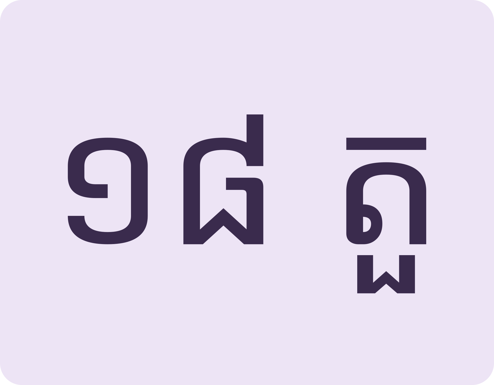
ពួកអ៊ ១៨ តួEighteen letters in the â-family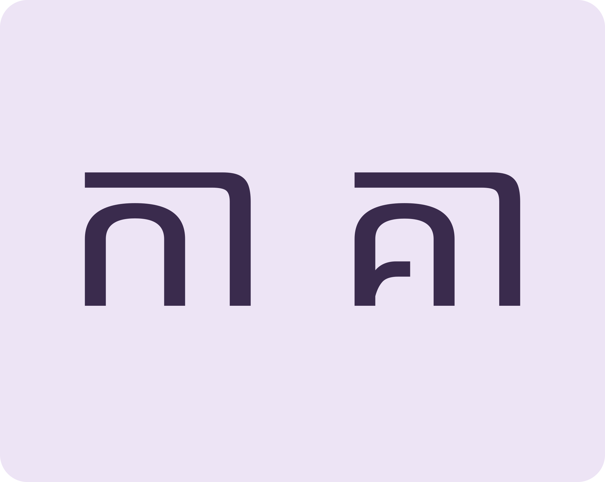
ស្រៈដូច សំឡេងខុសSame vowel sign, different sound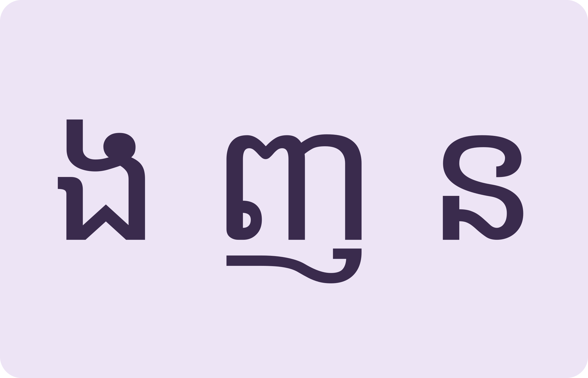
សំឡេងក្រាស់Nasals and voiced soundsMeet the eighteen voiced letters, hear how they bend vowels, then use them in family and job words.
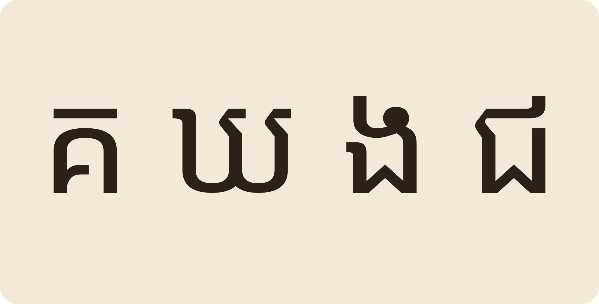
Space listen · ← → move · K show text
ពួក «អ៊» មាន ១៨ តួ ដូចជា គ ឃ ង ជ ឈ ញ ទ ធ ន ព ភ ម យ រ ល វ។
The â-family has eighteen letters: គ ឃ ង ជ ឈ ញ ទ ធ ន ព ភ ម យ រ ល វ and friends.
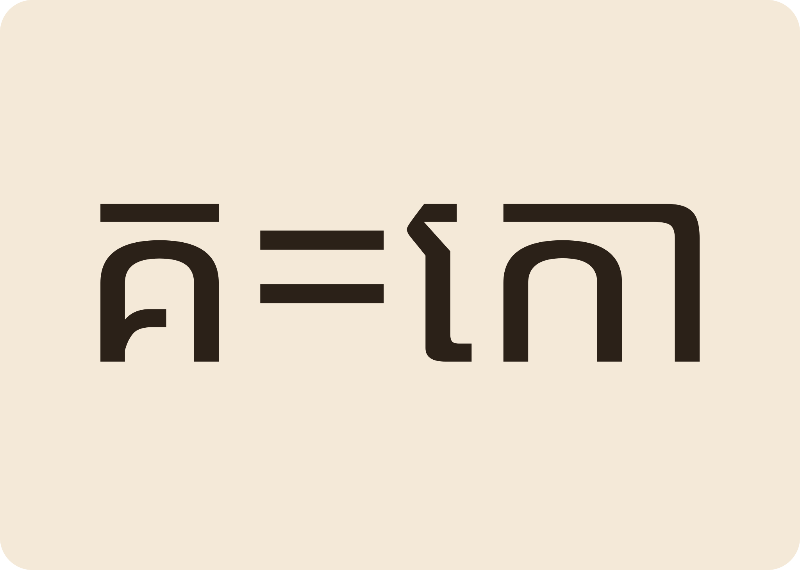
ពួកអ៊ នៅម្នាក់ឯង មានសំឡេង «អូ» ជាប់ខាងក្នុង ដូចជា គ = កោ។
A bare â-family letter carries -ô: គ reads “kô”.
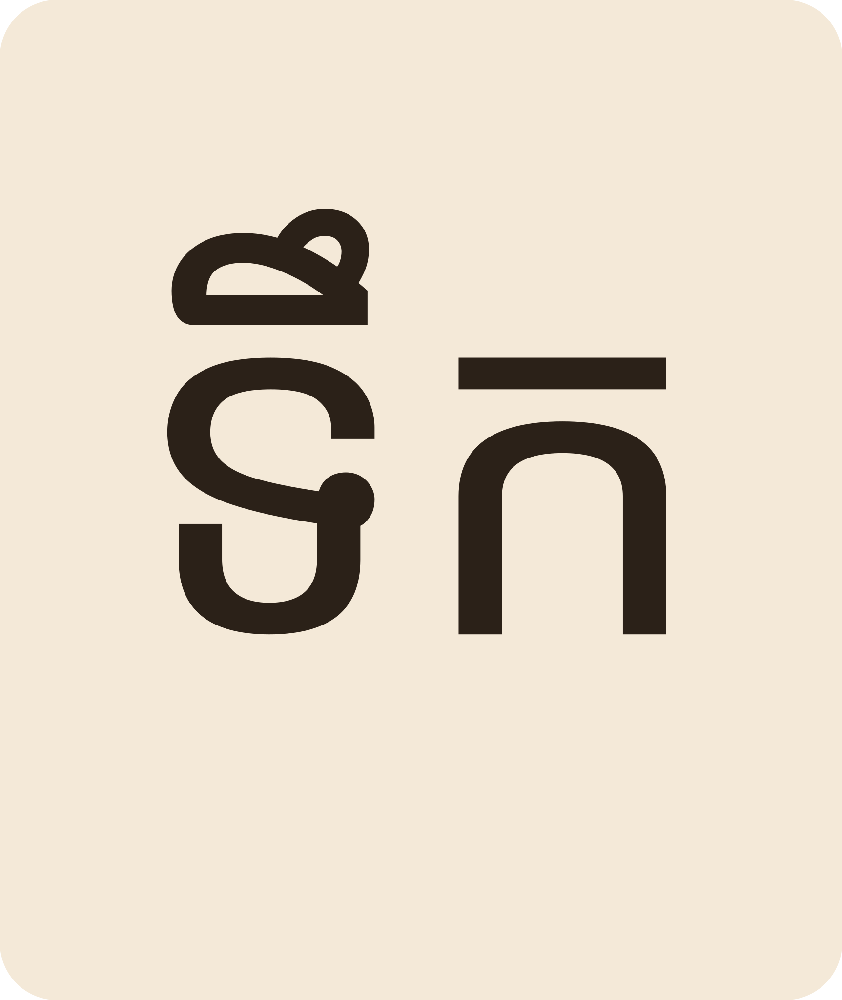
«ទ» ជាពួកអ៊។ «ទឹក» អាន តឹក មានន័យថាទឹកសម្រាប់ផឹក។
ទ is â-family. ទឹក “water” — the drink.
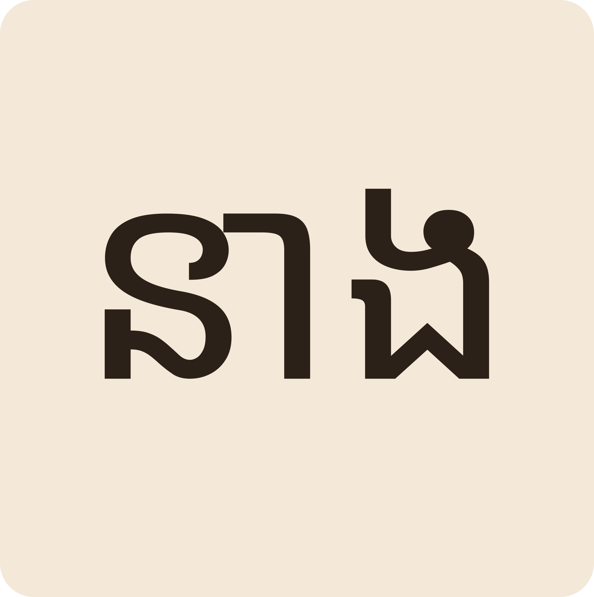
«នាង» អាន នៀង សម្រាប់ហៅស្ត្រី។
នាង reads “nieng” — she / a young woman.
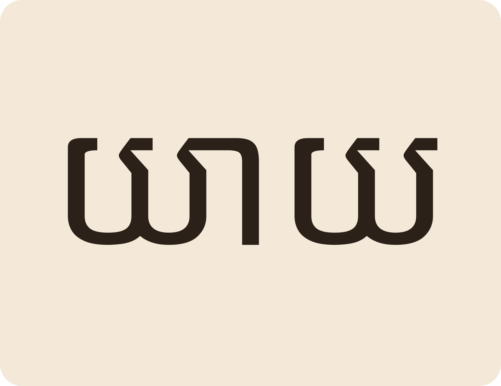
ពាក្យគ្រួសារពួកអ៊ ដូចជា យាយ មាតា ភរិយា។
Family words from the â-family: យាយ grandmother, មាតា mother, ភរិយា wife.
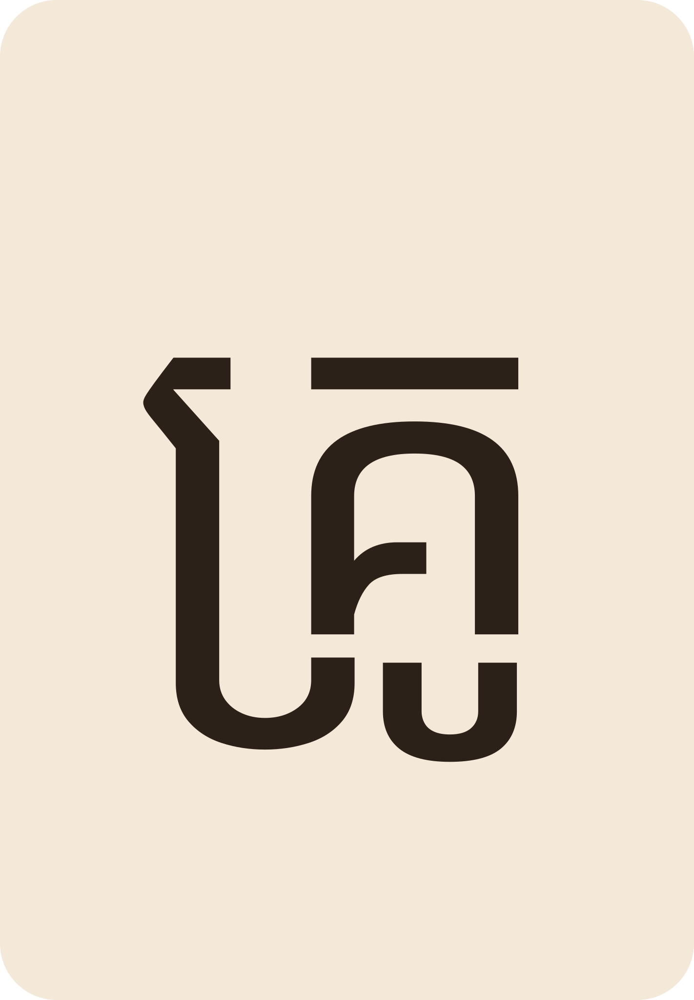
«គ្រូ» មានជើង «រ» នៅក្រោម «គ»។ គ្រូបង្រៀនអក្ខរកម្មនៅមណ្ឌលសិក្សា។
គ្រូ “teacher” hides a subscript រ under គ. Literacy teachers work at learning centres.
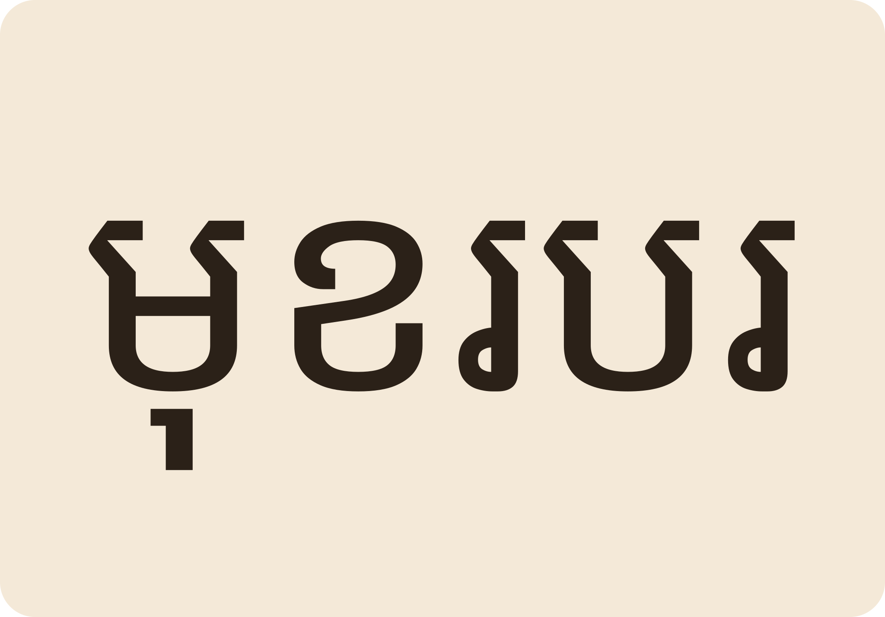
«មុខរបរ» មានពីរព្យាង្គ។ មុខរបរសំខាន់របស់គ្រួសារនាងចន្តាគឺធ្វើស្រែ។
មុខរបរ “occupation” has two syllables. Chantha's family main job is rice farming.
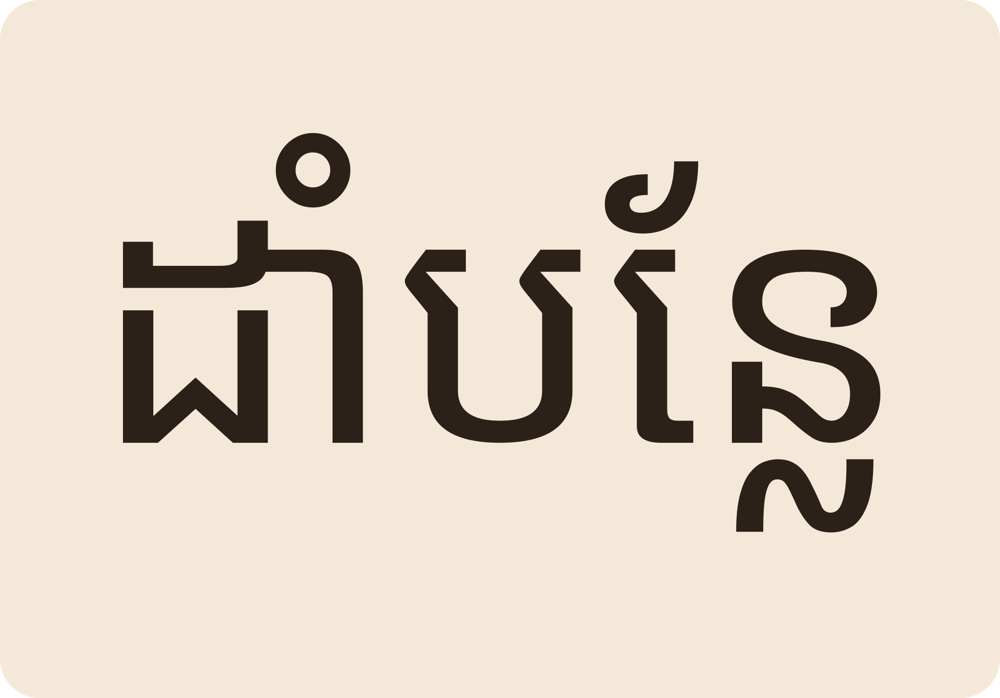
មុខរបរបន្ថែមគឺ «ដាំបន្លែ» ដើម្បីបង្កើនប្រាក់ចំណូល។
The side job is growing vegetables (ដាំបន្លែ) to raise the family income.
ខុស។ «កា» (ពួកអ) អាន kaa «គា» (ពួកអ៊) អាន kaô ស្ទើរ «កៅ»។
No. កា (a-family) = “kaa”; គា (â-family) bends toward “kaô”.
នេះជាគន្លឹះធំបំផុតនៃការអានខ្មែរ៖ ពួកព្យញ្ជនៈកំណត់សំឡេងស្រៈ។
សំឡេង «ទ» ខ្សោយជាងមុនទៅតាមពេលវេលា ប៉ុន្តែវានៅរាប់ជាក្រុមអ៊ ដូច្នេះស្រៈនៅតែប្លែង។
ទ softened over time but still counts as â-family, so it still bends the vowel.
ទាំងពីរនៅពួកអ៊។ ដូច្នេះ «យាយ» និង «វាល» មានសំឡេងស្រៈបែបអ៊។
Both are â-family, so យាយ and វាល carry the bent vowels.
«មុខរបរ» ជាការរកស៊ី «មុខងារ» ជាតួនាទីនៅកន្លែងធ្វើការ។
មុខរបរ is your livelihood; មុខងារ is a role or function at work.
ឪពុក ម្តាយ បង ប្អូន កូន ចៅ ស្វាមី ភរិយា។
ឪពុក father, ម្តាយ mother, បង older sibling, ប្អូន younger sibling, កូន child, ចៅ grandchild.
Tap a word's play button to hear it. Hide one side, then recall it before you tap to check.
ពួក «អ៊» មាន ១៨ តួ ដូចជា គ ឃ ង ជ ឈ ញ ទ ធ ន ព ភ ម យ រ ល វ។ ពួកអ៊ នៅម្នាក់ឯង មានសំឡេង «អូ» ជាប់ខាងក្នុង ដូចជា គ = កោ។
The â-family has eighteen letters: គ ឃ ង ជ ឈ ញ ទ ធ ន ព ភ ម យ រ ល វ and friends. A bare â-family letter carries -ô: គ reads “kô”.
«ទ» ជាពួកអ៊។ «ទឹក» អាន តឹក មានន័យថាទឹកសម្រាប់ផឹក។ «នាង» អាន នៀង សម្រាប់ហៅស្ត្រី។
ទ is â-family. ទឹក “water” — the drink. នាង reads “nieng” — she / a young woman.
ពាក្យគ្រួសារពួកអ៊ ដូចជា យាយ មាតា ភរិយា។ «គ្រូ» មានជើង «រ» នៅក្រោម «គ»។ គ្រូបង្រៀនអក្ខរកម្មនៅមណ្ឌលសិក្សា។ «មុខរបរ» មានពីរព្យាង្គ។ មុខរបរសំខាន់របស់គ្រួសារនាងចន្តាគឺធ្វើស្រែ។ មុខរបរបន្ថែមគឺ «ដាំបន្លែ» ដើម្បីបង្កើនប្រាក់ចំណូល។
Family words from the â-family: យាយ grandmother, មាតា mother, ភរិយា wife. គ្រូ “teacher” hides a subscript រ under គ. Literacy teachers work at learning centres. មុខរបរ “occupation” has two syllables. Chantha's family main job is rice farming. The side job is growing vegetables (ដាំបន្លែ) to raise the family income.
Q. «កា» និង «គា» អានដូចគ្នាទេ?
Q. Are កា and គា read the same?
A. ខុស។ «កា» (ពួកអ) អាន kaa «គា» (ពួកអ៊) អាន kaô ស្ទើរ «កៅ»។
A. No. កា (a-family) = “kaa”; គា (â-family) bends toward “kaô”.
Q. «ទ» នៅពួកអ៊ ហេតុអ្វី «ទារក» ស្តាប់ទូច «ត»?
Q. If ទ is voiced, why does ទារក sound like t?
A. សំឡេង «ទ» ខ្សោយជាងមុនទៅតាមពេលវេលា ប៉ុន្តែវានៅរាប់ជាក្រុមអ៊ ដូច្នេះស្រៈនៅតែប្លែង។
A. ទ softened over time but still counts as â-family, so it still bends the vowel.
Q. តើ «យ» និង «វ» នៅពួកណា?
Q. Which family do យ and វ belong to?
A. ទាំងពីរនៅពួកអ៊។ ដូច្នេះ «យាយ» និង «វាល» មានសំឡេងស្រៈបែបអ៊។
A. Both are â-family, so យាយ and វាល carry the bent vowels.
Q. «មុខរបរ» និង «មុខងារ» ខុសគ្នាទេ?
Q. Is មុខរបរ different from មុខងារ?
A. «មុខរបរ» ជាការរកស៊ី «មុខងារ» ជាតួនាទីនៅកន្លែងធ្វើការ។
A. មុខរបរ is your livelihood; មុខងារ is a role or function at work.
Q. ពាក្យគ្រួសារមានអ្វីខ្លះ?
Q. What family words should I know?
A. ឪពុក ម្តាយ បង ប្អូន កូន ចៅ ស្វាមី ភរិយា។
A. ឪពុក father, ម្តាយ mother, បង older sibling, ប្អូន younger sibling, កូន child, ចៅ grandchild.
មុខរបរអ្នកធ្វើអ្វី?
What is your occupation?
គ្រួសារខ្ញុំមានប្រាំនាក់។
My family has five members.
Say it in your head first, then tap the box to check.